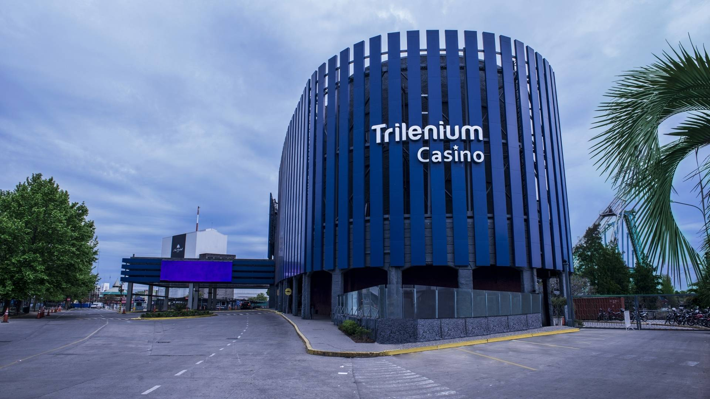
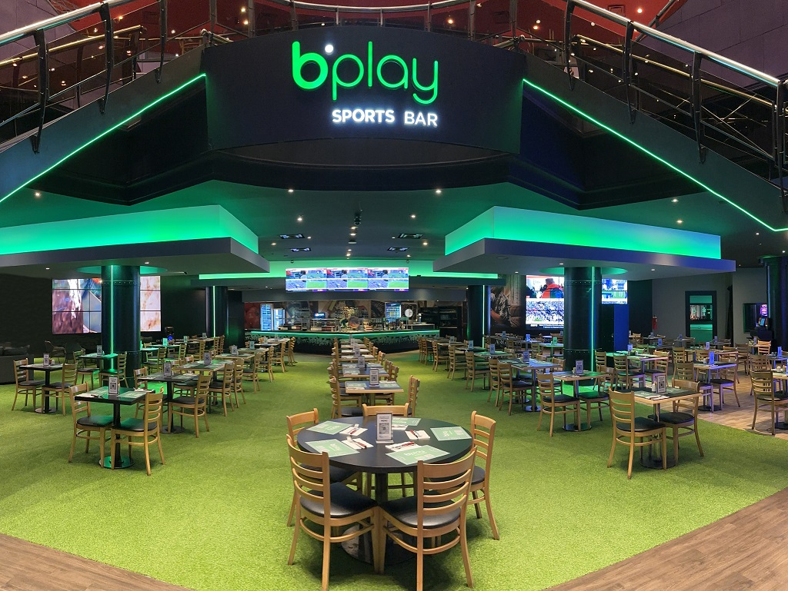
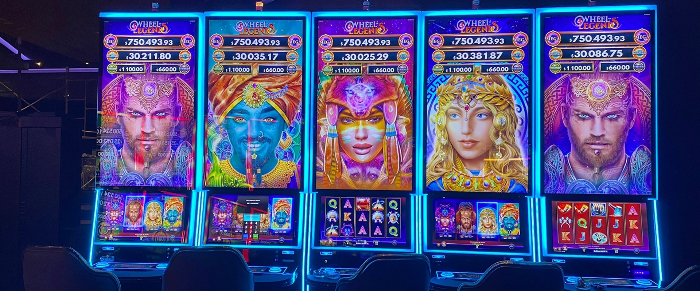

Una hoja de ruta para que Trilenium deje de comunicar una sala de juego y pase a comunicar lo que realmente es: el espacio de entretenimiento más grande de Tigre. Gastronomía, shows, experiencias y noche. La pelea no es contra otros casinos — es por la noche y el entretenimiento de la gente.
22.000 m² en el corazón de Tigre. Más de 1.900 máquinas y 74 mesas, sí — pero también siete espacios gastronómicos, shows en vivo, noches de discoteca, torneos y eventos. El activo de un complejo de entretenimiento integral ya existe. Lo que todavía no existe es la comunicación que lo cuente así.

Datos de dominio público y observación del sitio y redes a junio 2026. La auditoría detallada y las métricas nativas se confirman en la etapa de onboarding.
Hoy la marca se percibe como "la sala de juego". Esa lectura limita el público, lo expone a la competencia equivocada y deja sin contar la mitad de la experiencia. Estos son los puntos que detectamos y que esta propuesta viene a resolver.
Menos público del que la oferta merece, y un mensaje que apela siempre al mismo perfil de visitante.
No hay forma de saber qué acción genera resultado. Sin atribución, cada peso invertido es un acto de fe.
Sin newsletter, sin formularios, sin agenda viva ni CRM. Miles de personas entran y salen sin dejar rastro reactivable.
Las redes crecen lento y sin inversión sostenida. El alcance orgánico ya no alcanza para mover la aguja.
Las apps de apuestas ganan en comodidad. Competir contra ellas por "el juego" es competir donde no se puede ganar.
"Sala de juego" deja afuera a parejas, grupos y no-jugadores. El relato de entretenimiento integral todavía no se ejecuta.
Un sábado a la noche, nadie se pregunta "¿a qué casino voy?". Se pregunta "¿qué hago hoy?". La decisión real se juega contra una cena, un show, una salida con amigos — y contra la comodidad de quedarse en casa con el celular. Ahí, "casino" es un argumento angosto. "Destino de entretenimiento" es un argumento que gana.

Gana en conveniencia: sin traslado, sin horario. No se le gana en comodidad. Se le gana en lo que el celular no puede dar: el encuentro, el ritual de salir, lo sensorial.
Restaurantes, shows, teatros, centros de ocio de Zona Norte. Todos pelean por el mismo presupuesto y la misma franja horaria. Trilenium tiene todo eso adentro.
Ningún casino del AMBA comunica de forma sostenida "el plan de la noche". El territorio de la experiencia integral está libre. Es el lugar que Trilenium puede ocupar primero.
No es un cambio de estética: es un cambio de categoría. El juego deja de ser el titular y pasa a ser uno de cuatro mundos. Esto amplía el público total, reduce la dependencia reputacional del juego y abre la puerta a un tipo de visitante que hoy ni siquiera se siente invitado.
Cuatro mundos, una sola marca. El juego es uno de ellos — ya no el único.
El corazón histórico, ahora como una experiencia más dentro del destino.
Siete espacios para comer, brindar y quedarse. La razón perfecta para venir sin jugar.
Música en vivo, espectáculos y eventos. La agenda que da motivo para volver.
El ritual de salir en Tigre. La experiencia social que ninguna app puede replicar.
No estamos proponiendo una intuición creativa: estamos siguiendo el camino que ya validó la industria del entretenimiento a nivel global, alineado con cómo se comporta hoy el consumidor argentino.
Es lo que hoy representa el juego en los ingresos del Strip. El otro ~74% es gastronomía, shows y experiencias. El destino le ganó al casino.
Creció el juego online en un solo año. Gana en comodidad — y por eso lo presencial debe jugar otro partido: el de la experiencia.
Del gasto en entretenimiento de los argentinos va a experiencias presenciales. La gente recorta, pero protege la salida que vale la pena.
La audiencia y los datos de primera mano son el activo de marketing de la década. Hoy Trilenium aún no captura los de quien ya cruza la puerta.
Fuentes: Nevada Gaming Abstract 2024 · proyecciones de mercado de juego online en Argentina (medios sectoriales) · PwC Entertainment & Media Outlook Argentina. Cifras tratadas como orden de magnitud para encuadre estratégico.
El reposicionamiento de una marca no se mide en ventas la primera semana. Se construye. Estos primeros meses tienen un foco claro y deliberado.
Reunir y calificar a las personas correctas alrededor de la marca.
Que Trilenium aparezca en la mente cuando se decide la salida.
Descubrir, con datos reales, qué público y qué mensaje responden.
Ajuste continuo para bajar el costo por resultado mes a mes.
Darle a Meta el volumen que necesita para aprender y entregar mejor.
El cimiento sobre el que después se podrá medir cada conversión.
Hoy todavía no es posible atribuir una visita presencial a una campaña digital.
Y está bien que así sea: nadie puede medir lo que aún no instaló para medirse. Por eso, durante esta etapa los indicadores serán alcance, frecuencia, interacción, crecimiento de audiencias y tráfico a redes y al sitio. Cuando estén la nueva web, las landing pages y el CRM, empezaremos a medir conversiones reales. Preferimos comprometernos con lo medible antes que prometer lo que todavía no se puede demostrar.
La inversión publicitaria se reparte en tres frentes complementarios. Cada uno construye una parte distinta del camino hacia el destino.
Conocimiento de marca, recordación, cobertura y posicionamiento. Que la mayor cantidad de gente del área sepa qué es Trilenium hoy.
Llevar gente a las redes para hacer crecer la comunidad, la interacción, el consumo de contenido y la confianza en la marca.
Dirigir usuarios a landing pages, promociones, eventos, gastronomía y agenda — preparando la medición futura vía CRM.
Arrancar por campañas de conversión sería pedirle a desconocidos que compren en frío, y optimizar hacia un evento que todavía no se puede medir. El resultado: presupuesto quemado y un algoritmo que nunca aprende. El embudo se construye en orden.
Que la gente sepa que Trilenium existe y qué ofrece hoy. Genera recordación y la semilla de las primeras audiencias.
Llevar al interesado a explorar el perfil, la agenda, la gastronomía. Construye audiencias tibias y tráfico medible al sitio.
Reservas, registros, asistencia a eventos. Llega cuando existan landing + CRM y arranca caliente, no de cero.
Las proyecciones que siguen se construyeron sobre benchmarks de Meta Ads para entretenimiento, casinos físicos, gastronomía y espectáculos, usando supuestos deliberadamente prudentes. Preferimos prometer de menos y superarlo.
| Supuesto | Rango utilizado | Qué representa |
|---|---|---|
| CPC · Tráfico a redes | ARS 120 – 180 | Costo por clic hacia Instagram y Facebook |
| CPC · Tráfico web | ARS 150 – 220 | Costo por clic hacia el sitio |
| CPM · Alcance | ARS 2.000 – 3.000 | Costo por cada mil impresiones |
| Visita efectiva al perfil | 80% – 90% | De los clics a redes que llegan al perfil |
| Interacción sobre alcance | 2% – 4% | Personas que interactúan con el contenido |
| Alcance único | 60% – 75% | Personas distintas sobre el total de impresiones |
El mercado argentino es comparativamente económico para objetivos de alcance y tráfico, lo que juega a favor de esta etapa. Aun así, las metas reales se ajustan con la propia data de las primeras semanas — la única referencia verdaderamente válida para Trilenium.
Estos montos son inversión en plataformas (la pauta que se paga a Meta), separada de los honorarios de servicio. La diferencia entre un escenario y otro no es solo cuánta gente se alcanza: es cuánto aprende el sistema y qué tan sólida queda la base para el futuro.
No es el más caro ni el más barato. Es el punto donde la inversión empieza a rendir de verdad: el volumen mínimo para que el algoritmo aprenda, las audiencias se construyan con calidad y la base quede lista para medir.
Genera el volumen necesario para salir de la fase de aprendizaje y bajar el costo por resultado. Por debajo de cierto piso, las campañas quedan "a medio aprender" y rinden peor por cada peso.
El suficiente volumen para crear públicos personalizados y similares confiables. Sin esta semilla, las futuras campañas de conversión arrancan sin munición.
Permite probar geos, intereses, mensajes y creatividades con datos estadísticamente útiles — y no con corazonadas. Eso es lo que después evita escalar a ciegas.
Deja listo el camino para que, con landing pages y CRM, se empiece a medir el impacto real: visitas, reservas y conversiones atribuibles.
Invertir poco no es invertir prudente. Es invertir donde el dinero rinde menos.
Con el Escenario 1, el presupuesto se reparte entre demasiados frentes y ninguno junta señal suficiente: CPMs más altos, audiencias mal validadas y la sensación equivocada de que "la pauta no funciona", cuando en realidad nunca tuvo las condiciones para funcionar. El Escenario 2 es el umbral donde la inversión se transforma en aprendizaje, y el aprendizaje en resultados sostenibles.
Uno ejecuta y optimiza la publicidad. Otro piensa, anticipa y acompaña. El tercero se ocupa de que cada pieza llegue bien a cada pantalla del complejo y a cada canal digital. La estrategia sin ejecución es teoría; la ejecución sin estrategia es gasto.
No es "poner anuncios". Es operar un sistema que requiere ajuste constante: cada día el mercado, la competencia en la subasta y la fatiga creativa cambian, y las campañas se optimizan en consecuencia.
Contempla un honorario fijo mensual más un 15% variable sobre la inversión realizada en plataformas publicitarias. El porcentaje no se traduce en un monto cerrado: depende del presupuesto de pauta de cada mes.
Las reuniones son la punta visible. Debajo hay un equipo trabajando entre encuentro y encuentro: lo que Trilenium contrata acá no son horas de reunión — es inteligencia estratégica aplicada a su negocio.
Incluye una dedicación de 20 horas mensuales de equipo estratégico. Las reuniones representan una parte mínima de esas horas: el verdadero valor está en lo que el equipo hace entre cada encuentro — investigar, analizar, planificar y anticipar.
Trilenium diseña la pieza madre. Nosotros la llevamos a los diez formatos en los que vive: los LED del complejo, el mural de pantallas, el escenario, la app y las redes. Adaptar no es escalar una imagen — es recomponer el mensaje para que funcione igual de bien en un feed vertical y en una pantalla de cinco metros de ancho.
Hasta 30 piezas madre por mes adaptadas a los 10 formatos: 300 piezas terminadas.
Un mensaje que funciona en un feed de 4:5 se desarma en una pantalla de 5,25:1. Cambia el punto focal, la jerarquía tipográfica, el recorte de la foto y hasta la cantidad de palabras que alguien puede leer caminando a diez metros de distancia. Por eso cada formato se rediseña, no se estira.
La grilla reserva las cruces de unión: ningún dato crítico cae sobre el marco entre televisores.
Stories y pantallas verticales comparten proporción; escenario y app también. El resto no se parece a nada: trabajamos por familias de proporción para producir rápido sin resignar calidad.
En Wide Out y Multiled nadie se detiene a leer: la gente pasa. Menos palabras, mayor cuerpo y más contraste. La misma promo dice más en el feed y menos —pero mejor— en la pantalla.
Si un evento necesita un formato que no está en la lista —una proyección, un tótem, una pieza para prensa— se suma según la necesidad. El sistema está pensado para crecer.
Promociones, shows, eventos, gastronomía y acciones comerciales. Trilenium define y diseña la pieza madre; nosotros la desplegamos en el sistema de formatos. Esa multiplicación es la verdadera dimensión del trabajo: no son 30 archivos por mes, son 300 piezas terminadas, cada una recompuesta para su soporte.
La pieza madre en formato editable, con fuentes, imágenes enlazadas y capas ordenadas. Es la condición que hace posible adaptar sin rehacer.
Los 10 formatos, cada uno sobre su grilla y sus zonas seguras. Se respeta la identidad de la pieza original y se recompone lo que cada soporte necesita.
Archivos exportados a la medida exacta de cada pantalla, con nomenclatura ordenada para que el equipo interno los suba sin dudas ni renombrados.
Adaptación a los 10 formatos de cada pieza madre, con la grilla y las zonas seguras de cada soporte: uniones del mural, interfaz de Stories, legibilidad a distancia en los LED.
Sistema de plantillas maestras construido en el primer mes: grillas, zonas seguras y escalas tipográficas por formato. Se arma una vez y acelera toda la producción posterior.
Dos rondas de ajustes por pieza, control de calidad y exportación optimizada por soporte, con nomenclatura ordenada para el equipo que carga las pantallas.
Formatos adicionales a demanda: si un evento necesita una medida que no está en la lista, se suma según la necesidad.
Requiere que la pieza madre llegue en archivo editable. Si llega cerrada o aplanada, la adaptación implica rehacerla y se cotiza aparte.
Las piezas en movimiento (animación para LED y pantallas) no están incluidas: las dimensionamos juntos si Trilenium quiere sumarlas.
Una reunión dura una hora. El trabajo que la hace valiosa toma toda la semana. Esto es lo que ocurre detrás de cada encuentro — y por qué contratar a Popcorn es contratar un equipo que piensa el negocio, no una agenda de reuniones.
Análisis e investigación. Revisión de datos de campaña, competencia y mercado antes de cada decisión.
Propuestas y planificación. Ideas de campañas, calendario de acciones y oportunidades de mejora.
Revisión y optimización. Lectura continua del rendimiento y ajuste fino de lo que está en el aire.
Entregables. Reportes claros, recomendaciones accionables y materiales para el equipo interno.
Tres honorarios de servicio y una inversión en plataformas. Sin costos escondidos y sin partidas que aparezcan después: cada línea tiene un alcance definido en las páginas anteriores.
| Concepto | Alcance | Honorario mensual |
|---|---|---|
| Acompañamiento estratégico | 20 horas mensuales de equipo estratégico: análisis, planificación, propuestas y seguimiento | $1.650.000 |
| Gestión de publicidad digital | Planificación, armado, optimización diaria y reportes. Honorario fijo + 15% variable sobre la inversión en plataformas | $910.000 |
| Adaptación de piezas | 30 piezas madre por mes adaptadas a los 10 formatos — 300 piezas terminadas | $3.670.000 |
| Total honorarios fijos | Estrategia + gestión de medios + adaptación de piezas. Se suma el 15% variable de gestión según la pauta de cada mes | $6.230.000 |
| Inversión en plataformas | Presupuesto de pauta en Meta, Escenario 2. Se paga directamente al medio — no es honorario de agencia | $2.500.000 |
Los honorarios remuneran el trabajo del equipo de Popcorn. La inversión en plataformas se paga directamente al medio y define el volumen de alcance proyectado: se puede subir o bajar sin renegociar el resto — y con ella se mueve el 15% variable de gestión, que se calcula sobre la pauta efectivamente invertida cada mes. Todos los valores expresados en pesos argentinos, más IVA.
Una agencia tradicional entrega campañas. Nosotros entregamos una forma de pensar el negocio donde cada acción genera aprendizaje y cada dato mejora la siguiente decisión.
Especialistas en marketing de performance que no pierden de vista el negocio.
Estrategia, paid media, contenido, audiovisual y web bajo un mismo techo.
Pensamos el plan y lo llevamos a la práctica. Sin brechas entre idea y resultado.
Un equipo presente, que conoce el proyecto y responde con criterio.
Cultura de mejora permanente: lo que funciona se escala, lo que no se corrige.
Salud, entretenimiento y empresas que buscan crecer con estrategia.
Información transparente y entendible, conectada siempre con el negocio.
Cada recomendación tiene fundamento. Menos opinión, más evidencia.
No vendemos publicaciones. Ayudamos a crecer. Esa es la diferencia.
Una evolución en tres fases, donde cada etapa habilita la siguiente. El marketing empieza midiéndose en métricas digitales y termina relacionándose con gente real entrando al complejo.
Que cada acción genere aprendizaje. Que cada campaña construya una audiencia. Que cada dato permita decidir mejor. Y que, con el tiempo, el marketing deje de medirse solo en métricas digitales para empezar a medirse en gente real cruzando la puerta.